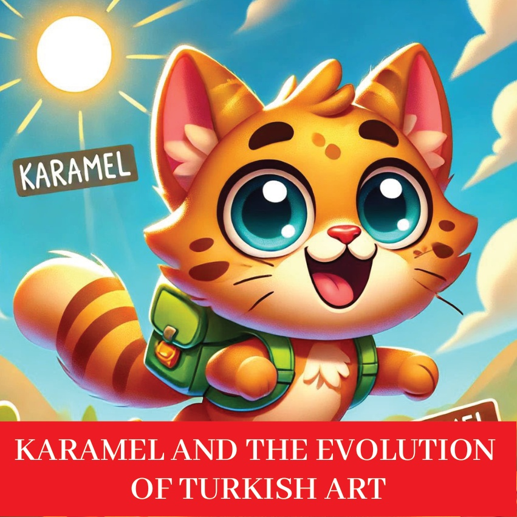
1

2

3
Карамель, цікавая малое котка,
хацела даследаваць эвалюцыю турэцкага мастацтва.
Яна вырашыла падарожнічаць праз
час, каб убачыць, як турэцкае мастацтва эвалюцыявала,
ад старажытных часоў да сучаснасці.
З цікавасцю ў сэрцы,
яна адправілася ў новае прыгода.
4
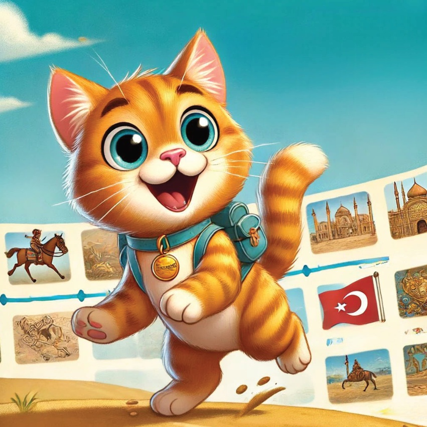
5
Древнее анатолийское искусство - Чаталхьоюк
Першай прыпыркай Карамелі была Чаталхьоюк,
адных з найстарашых паселенняў у свеце.
Яна з задавальненнем разглядала старадаўнія фрескі на сценах і артыфакты, якія паказвалі
стваральны лад ранніх людзей.
6
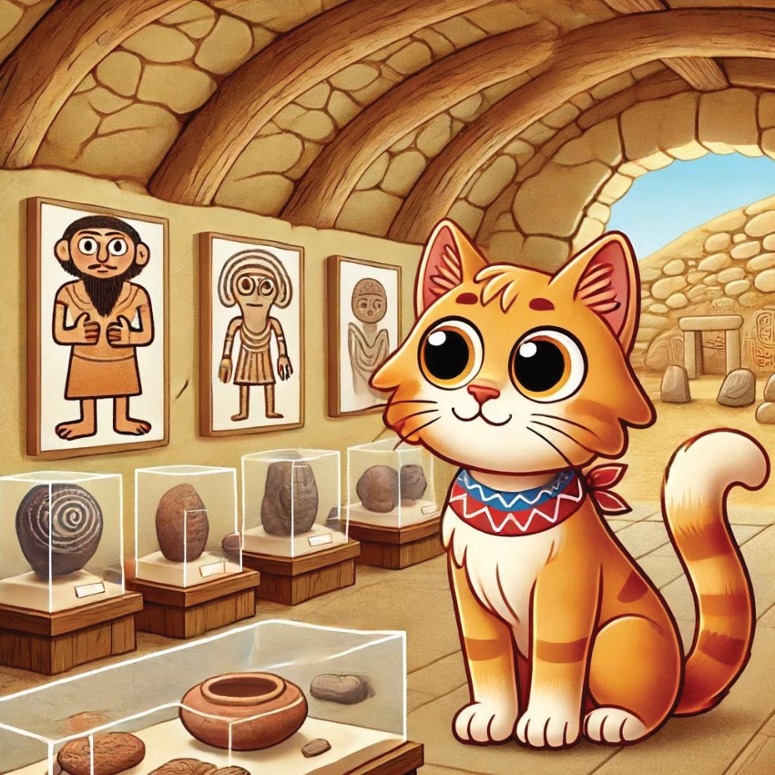
7
Хіттыская мастацкае - Багазкёй
Далей Карамель падарожнічала ў Багазкёй,
куԀчыне старажытнага хіттыскага сярвяталыцы Хаттуса.
Яна вывучала ўражаючыя
прыродныя выцескаўкі на камяניсах і манументальныя буԀні.
8
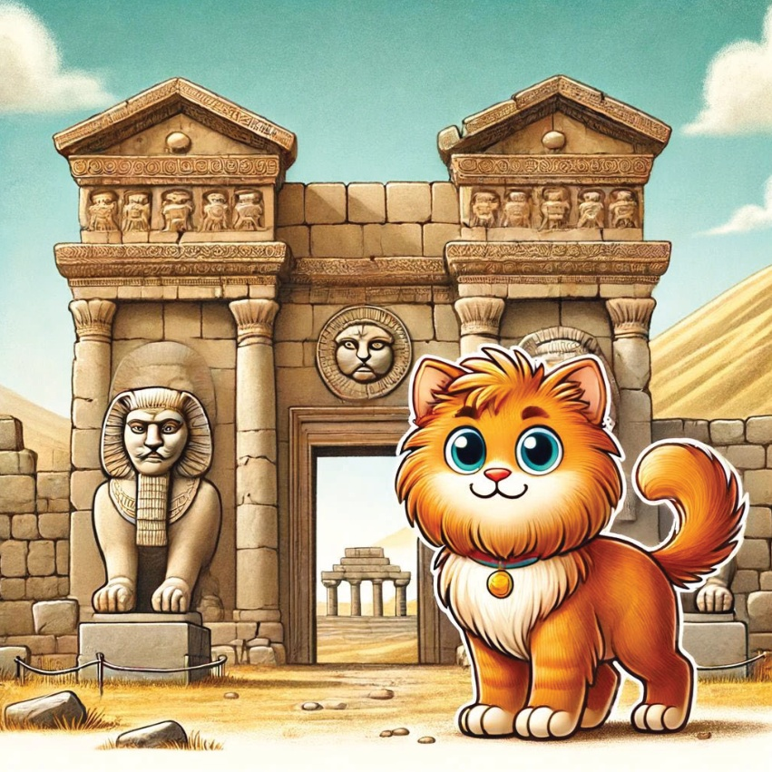
9
Рэман і візантыйскае мастацтва - Эфес
У Эфесе Карамель адкрыла велічча мастацтвы эпохі Рымскай і Візантыйскай імперій. Яна прайшла па старажытным горадзе, любуясь мазаікамі і мармеровімі статуямі.
10
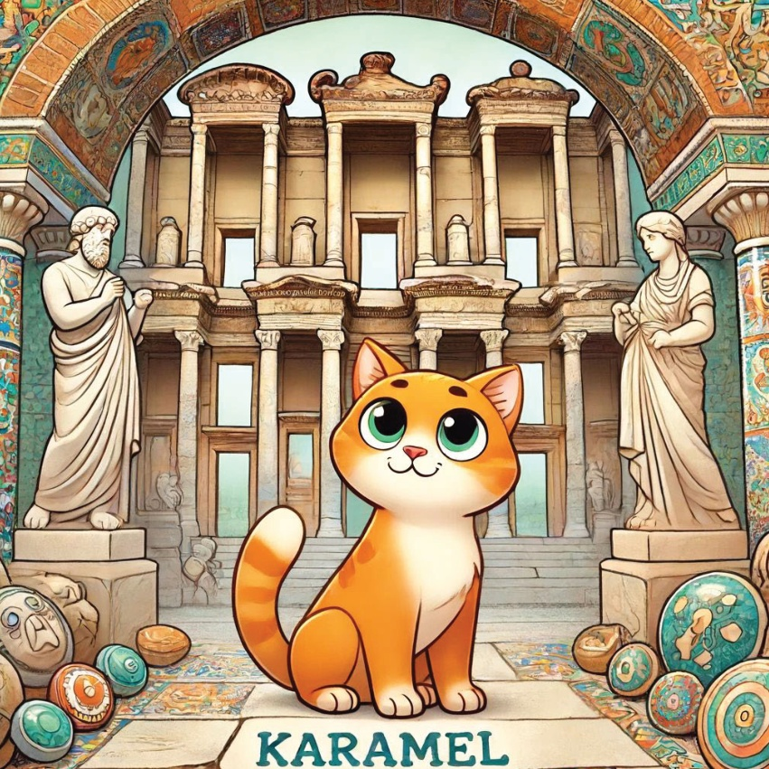
11
Сэлюкская мастацкасць - Конья
Карамель наведала Коню,
горад багаты селюкскай мастацкасцю і архітэктурай.
Яна правяла час, вывучаючы цудоўна абразаныя мазкі і складаныя карычневыя пліткавыя работаў.
12
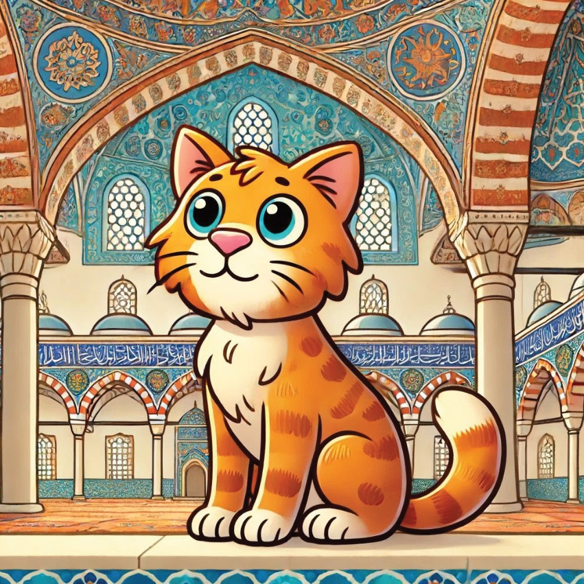
13
Османскае мастацтва - Палац Топкапі, Істанбул
У Істанбуле Карамель вывучала османскае мастацтва і архітэктуру Палацу Топкапі. Яна захоўвала ў восхітленні розкія дэкорацыі і цудоўную каліграфію.
14
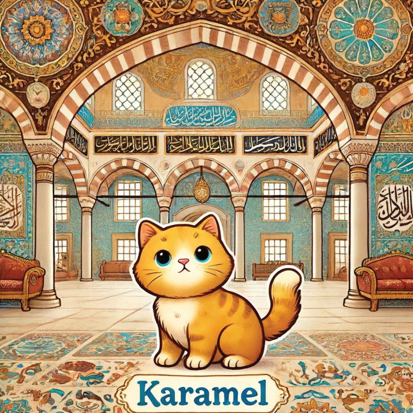
15
Современное турецкое искусство – Стамбул Модерн
Следующей остановкой Карамель был Музей современного искусства Стамбула,
где она увидела работы современных турецких художников.
Она была вдохновлена яркими и разнообразными проявлениями современного искусства.
16
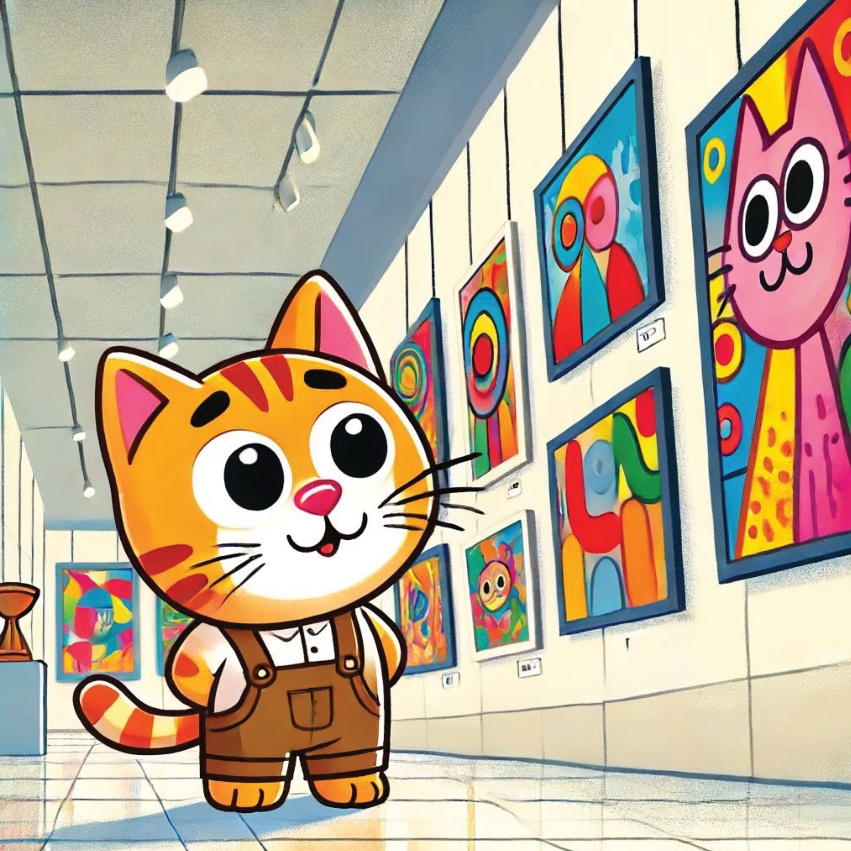
17
Уличнае мастацтва - Кадыкёй, Істанбул
Нарэшце, Карамель вывучыла
улічнае мастацтва Кадыкёя, Істанбула.
Яна прайшла па вуліцах,
вайсці здзіўлена крэатыўнасці
і паведамленню, перадаваным праз
мюралы і графіці.
18
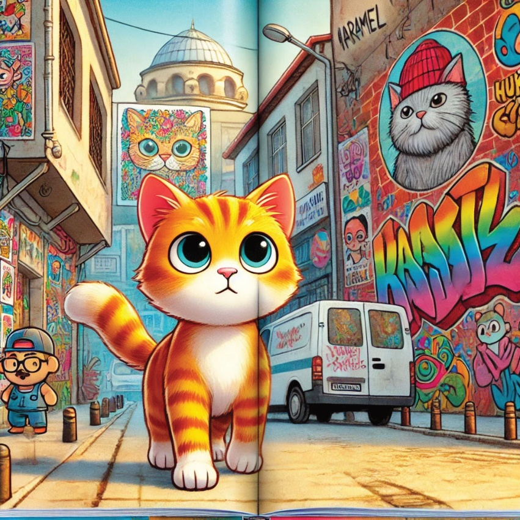
19
З захапленьнем у сэрцы і збагачаным розумам, пасля эвалюцыі турэцкага мастацтва, Карамел вярталася дадому. Яна зразумела, што турэцкае мастацтва – гэта цудоўны гобелен гісторыі і творчасці.
20
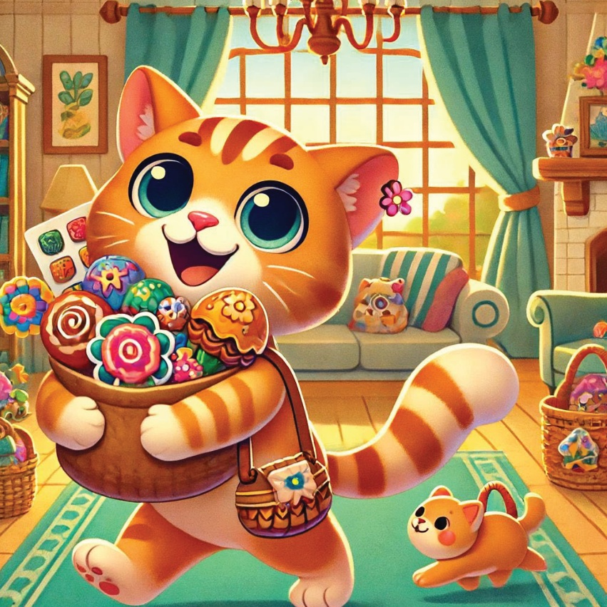
21
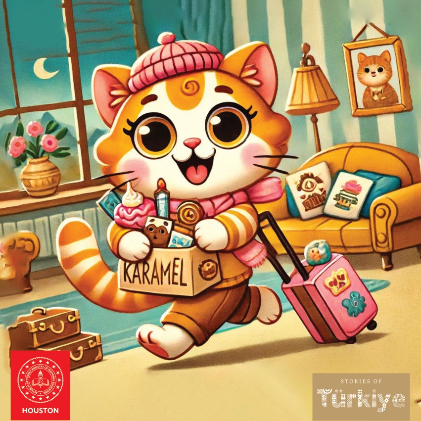
22